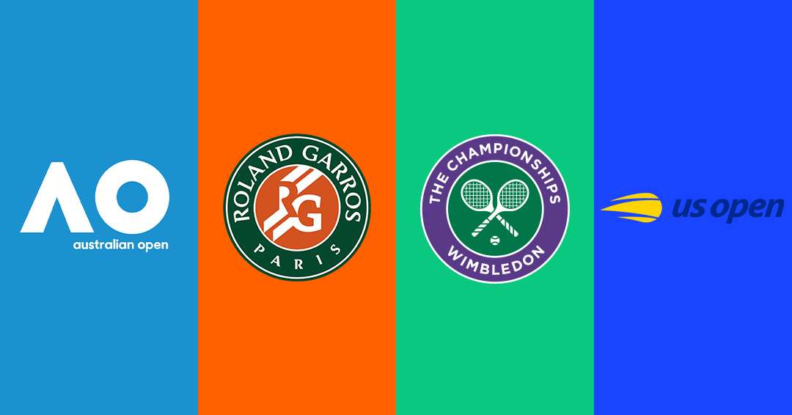

| Torneo | País | Ciudad | Superficie | Mes | Fundado | Premio Aproximado |
|---|---|---|---|---|---|---|
| Australian Open | Australia | Melbourne | Dura | Enero | 1905 | USD 75 millones |
| Roland Garros | Francia | París | Arcilla | Mayo - Junio | 1891 | USD 56 millones |
| Wimbledon | Reino Unido | Londres | Pasto | Junio - Julio | 1877 | USD 60 millones |
| US Open | Estados Unidos | Nueva York | Dura | Agosto - Septiembre | 1881 | USD 65 millones |
| Los torneos Grand Slam son los más prestigiosos del tenis profesional y se diferencian principalmente por su superficie, sede y tradición histórica. | ||||||
